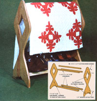
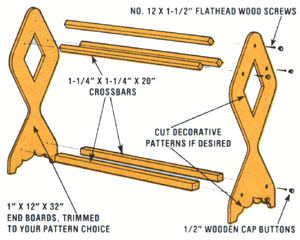

Storage space for blankets-during the "in between" months when it can be cold one night and warm the next-can sometimes be hard to come by . . . especially when the shelves of many folks' bedroom closets are overflowing with the young'uns' toys, last season's clothing, or assorted containers that are "sure to come in handy someday".
Fortunately, MOTHER's researchers have designed a blanket rack that provides an easy solution to the problem . . . and one that won't crush the down in your comforter or crease the fabric of your favorite bed coverings. Better still, the holder's wooden rods can also be used for drying clothes, hanging towels (when you find yourself besieged by a lot of guests), or racking shoes (they rest against the bottom crossbars).
The attractive piece of furniture can be yours to enjoy . . . for only a few dollars' worth of wood and a couple of hours of your time. And this is one project you just about have to build yourself, because it's not the kind of item you'll find in the local department store at any cost.
MOM's workers built the handy device from spruce, but you can get almost the same results using white pine or fir. We cut a pair of 32" lengths of 1 X 12 for the rack's ends, and ripped five 1-1/4" X 1-1/4" boards from a 20" length of 2 X 8. (You could also use your ripsaw to divide three 20" 2 X 4's . . . which would leave you with one extra rod.) Our materials list was filled out with ten No. 12 X 1-1/2" flathead screws, ten 1/2" wooden cap buttons, and some glue and varnish.
As for tools, you'll need a ripsaw, a crosscut saw, a saber saw, a hand drill with a No. 12 adjustable countersink bit, a screwdriver, a paintbrush, and some sandpaper.
After cutting the 1 X 12's to length, you can determine the shape you'd like and cut both pieces with a saber saw . . . or you could, if you prefer, simply assemble the rack with unadorned rectangular sides. We decided on the diamond-and-a-half pattern shown in the picture. (The size and shape of the bottom scrollwork and upper cutout are arbitrary.)
The be st way to come up with a pleasing end pattern that's symmetrical is to make a template by folding a sheet of wrapping paper-11" wide and 32" long-in half lengthwise. Draw one edge of your proposed end board ... cut both edges of the folded paper . . . open it up . . . and if you like the result (assuming the removal of the wood will leave room for attaching the five crossbars), trace the lines on one of the 1 X 12's and then cut the two of them at once.
We elected to place the centers of the two lower rods four inches above the floor line and six inches apart. The ends of the three upper pieces form the points of equilateral triangles with five-inch sides . . . the highest points being two inches below the end pieces' top edges.
We marked the two 1 X 12's and, using a No. 12 adjustable countersink tool, bored the holes for the crossbars. This drill/ countersink tool not only creates the right-sized hole, but sinks it 3/16" . . . which is the depth you'll need later to install the 1/2" cap buttons.
Then we glued and secured-with No. 12 X 1-1/2" flathead screws-the ends of the rods to the inner faces of the two 1 X 12's. Note that the 1-1/4" faces of the lower crossmembers are parallel to the floor, while the three upper pieces are cocked 45° in an "edge high" position.
Next, we glued in the cap buttons and sanded all edges and surfaces. A couple of coats of satin urethane varnish (lightly sanded between applications) and voiles: Our blanket rack was complete.
We think it's not only useful, but unusual enough to make an excellent gift.
|
 |
 |
|